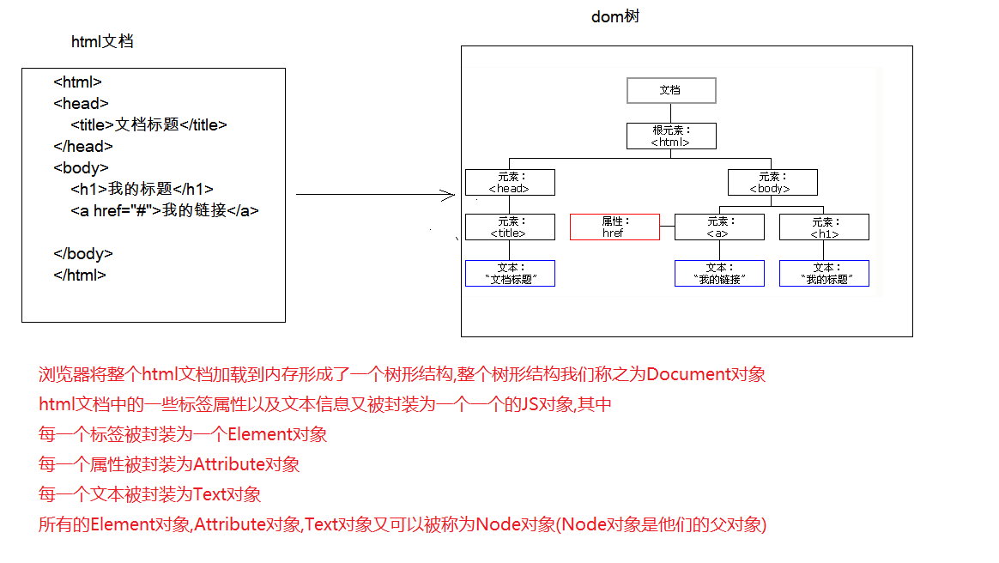

04-JavaScript高级一. 今日目标二. 今日内容(一) DOM和事件入门1. DOM简单学习操作Element对象(掌握)获取页面标签(元素)对象:Element修改标签(元素Element)属性值步骤示例修改标签(元素Element)内容体步骤示例2. 事件简单学习绑定事件方式一:直接在html标签上，指定事件的属性(操作)，属性值就是js代码方式二:通过js获取元素对象，指定事件属性，设置一个函数案例一:电灯开关(二) JavaScript - BOM1. Window:窗口对象(熟悉)创建方法属性特点案例二 : 图片轮播2. Location:地址栏对象(掌握)创建方法属性案例三 : 定时跳转到首页3. History:历史记录对象(了解)创建方法属性(三) JavaScript - DOM1. Document:文档对象(掌握)创建方法获取Element对象(掌握)创建其他DOM对象2. Element:元素对象(掌握)获取方法3. Node:节点对象特点方法属性4. 案例四:动态表格分析及步骤代码实现三. 作业练习练习一 : 跑马灯练习二: 下拉列表左右选择
DOM的作用:控制html文档的内容
Element//通过元素的id获取元素对象var ele = document.getElementById("id值")Element)属性值xxxxxxxxxx1. 明确获取的对象是哪一个？2. 查看API文档，找其中有哪些属性可以设置
x<html lang="en"><head> <meta charset="UTF-8"> <title>Title</title></head><body><img src="img/1.jpg" alt="" width="100%" id = "img"><script>// 需求:切换图片// 1. 明确获取的对象是哪一个？ img标签对象var i = document.getElementById("img");// 2. 查看API文档，找其中有哪些属性可以设置 src属性i.src = "img/2.jpg";</script></body></html>Element)内容体xxxxxxxxxx1. 获取元素对象2. 使用`innerHTML`属性修改标签体内容
xxxxxxxxxx<html lang="en"><head> <meta charset="UTF-8"> <title>Title</title></head><body><div id="div1">传智博客....</div><script> //需求:设置页面上div的内容为"黑马程序员...",字体显示为红色 //1. 获取元素对象 var html = document.getElementById("div1"); //2.使用`innerHTML`属性修改标签体内容 document.getElementById("div1").innerHTML = "<font color='red'>黑马程序员...</font>" ;</script></body></html>xxxxxxxxxx功能: 某些组件被执行了某些操作后，触发某些代码的执行。* 造句: xxx被xxx,我就xxx* 我方水晶被摧毁后，我就责备对友。* 敌方水晶被摧毁后，我就夸奖自己。
xxxxxxxxxx<html lang="en"><head> <meta charset="UTF-8"> <title>Title</title> <script> function func1(){ alert("按钮被点击了...") } </script></head><body><!-- onclick : 点击事件,用户点击时触发和函数执行--><input type="button" value="按钮" onclick="func1()"></body></html>xxxxxxxxxx<html lang="en"><head> <meta charset="UTF-8"> <title>Title</title></head><body><input type="button" value="按钮" id="btn"><script> //1. 获取需要绑定事件的标签对象 var ele = document.getElementById("btn"); //2. 定义事件触发需要执行的函数 function func2(){ alert("按钮被点击了2....") } // 通过JS获取标签对象,通过设置标签的事件属性值进行绑定 ele.onclick = func2;</script></body></html>xxxxxxxxxx<html lang="en"><head> <meta charset="UTF-8"> <title>电灯开关</title></head><body><img id="light" src="img/off.gif"><script> /* 分析: 1.获取图片对象 2.绑定单击事件 3.每次点击切换图片 * 规则: * 如果灯是开的 on,切换图片为 off * 如果灯是关的 off,切换图片为 on * 使用标记flag来完成 */ //1.获取图片对象 var light = document.getElementById("light"); var flag = false;//代表灯是灭的。 off图片 //2.绑定单击事件 light.onclick = function(){ if(flag){//判断如果灯是开的，则灭掉 light.src = "img/off.gif"; flag = false; }else{ //如果灯是灭的，则打开 light.src = "img/on.gif"; flag = true; } }</script></body></html>xxxxxxxxxx概念:Browser Object Model 浏览器对象模型1. 将浏览器的各个组成部分封装成对象。组成:1. Window:窗口对象2. Navigator:浏览器对象3. Screen:显示器屏幕对象4. History:历史记录对象5. Location:地址栏对象
xxxxxxxxxx浏览器中已经内置了一个`window`对象,无需创建直接使用即可
| 方法名称 | 方法描述 |
|---|---|
| alert() | 显示带有一段消息和一个确认按钮的警告框 |
| confirm() | 显示带有一段消息以及确认按钮和取消按钮的对话框,如果访问者点击"确定"，此方法返回true，否则返回false。 |
| prompt() | 显示可提示用户输入的对话框 ,这个方法返回用户输入的字符串。 |
| close() | 关闭当前浏览器窗口 |
| open() | 打开一个新的浏览器窗口,返回新的Window对象 |
| setTimeout(code,milliseconds) | 设置一次性定时器 参数: code:js代码或者方法对象 milliseconds:毫秒值 返回值: 返回该定时器的ID值 |
| clearTimeout(id) | 取消由 setTimeout() 方法设置的定时器。 参数: id:需要取消的定时器的ID值 |
| setInterval(code,milliseconds) | 设置循环定时器, 参数: code:js代码或者方法对象 milliseconds:毫秒值 返回: 返回该定时器的ID值 |
| clearInterval(id) | 取消由 setInterval() 设置的定时器 , 参数: id:需要取消的定时器的ID值 |
| 属性名称 | 属性描述 |
|---|---|
| history | 获取历史记录对象History |
| location | 获取地址栏对象Location |
| navigator | 获取浏览器对象Navigator |
| screen | 获取显示器屏幕对象Screen |
| document | 获取DOM对象 Document |
xxxxxxxxxx1. Window对象不需要创建可以直接使用 window使用。 window.方法名();2. window引用可以省略。 方法名();
xxxxxxxxxx<html lang="en"><head> <meta charset="UTF-8"> <title>轮播图</title></head><body> <img id="banner" src="img/banner_1.jpg" width="100%"> <script> var number = 1; function changeImg(){ number ++; if(number > 3){ number = 1; } document.getElementById("banner").src = "img/banner_"+number+".jpg"; } setInterval(changeImg,3000); </script></body></html>xxxxxxxxxx//获取location对象 ,window可以省略var location = window.location ;xxxxxxxxxx1. window.location2. location
| 方法名称 | 方法描述 |
|---|---|
| reload() | 重新加载当前文档。刷新 |
| 属性名称 | 属性描述 |
|---|---|
| href | 设置或返回完整的 URL |
xxxxxxxxxx<html lang="en"><head> <meta charset="UTF-8"> <title>自动跳转首页</title><style> p{ text-align : center; } span{ color:red; }</style></head><body> <p> <span id="time">5</span>秒之后,自动跳转首页... </p><script> //获取倒计时秒数 var time = document.getElementById("time"); var second = 5; function showTime(){ second -- ; if(second <= 0){ //时间到了，跳转首页 location.href = "https://www.baidu.com"; } time.innerHTML = second; } setInterval(showTime,1000);</script></body></html>xxxxxxxxxx//获取历史记录对象,window可以省略var history = window.history ;| 方法名称 | 方法描述 |
|---|---|
| back() | 加载 history 列表中的前一个 URL。 |
| forward() | 加载 history 列表中的下一个 URL。 |
| go(参数) | 加载 history 列表中的某个具体页面。参数: 正数:前进几个历史记录,负数:后退几个历史记录 |
| 属性名称 | 属性描述 |
|---|---|
| length | 返回当前窗口历史列表中的 URL 数量 |
xxxxxxxxxxDOM概念:概念: Document Object Model 文档对象模型

xxxxxxxxxx文档对象模型将标记语言文档的各个组成部分，封装为对象。可以使用这些对象，对标记语言文档进行CRUD的动态操作W3C DOM 标准被分为 3 个不同的部分:* 核心 DOM - 针对任何结构化文档的标准模型* Document:文档对象* Element:元素对象* Attribute:属性对象* Text:文本对象* Comment:注释对象* Node:节点对象，其他5个的父对象* XML DOM - 针对 XML 文档的标准模型* HTML DOM - 针对 HTML 文档的标准模型
xxxxxxxxxx//获取文档对象,window可以省略var document = window.document;| 方法名称 | 方法描述 |
|---|---|
| getElementById(id属性) | 根据id属性值获取元素对象。id属性值一般唯一,返回元素对象 |
| getElementsByTagName(标签名称) | 根据元素名称获取元素对象们。返回值是一个数组 |
| getElementsByClassName(class属性) | 根据Class属性值获取元素对象们。返回值是一个数组 |
| getElementsByName(name属性) | 根据name属性值获取元素对象们。返回值是一个数组 |
| 方法名称 | 方法描述 |
|---|---|
| createAttribute(name) | 创建属性对象 |
| createComment() | 创建注释对象 |
| createElement() | 创建元素对象 |
| createTextNode() | 创建我那本对象 |
xxxxxxxxxx// 获取文档中的元素对象var ele1 = document.getElementById("username");//新创建一个元素对象var div = document.createElement("div");| 方法名称 | 方法描述 |
|---|---|
| removeAttribute(name) | 删除属性 |
| setAttribute(name,value) | 设置属性 |
xxxxxxxxxx所有dom对象都可以被认为是一个节点
| 方法名称 | 方法描述 |
|---|---|
| appendChild(node) | 向节点的子节点列表的结尾添加新的子节点 |
| removeChild(node) | 删除（并返回）当前节点的指定子节点 |
| replaceChild() | 用新节点替换一个子节点。 |
| 方法名称 | 方法描述 |
|---|---|
| parentNode | 返回节点的父节点 |
xxxxxxxxxx1. 添加:1. 给添加按钮绑定单击事件2. 获取文本框的内容3. 创建td，设置td的文本为文本框的内容。4. 创建tr5. 将td添加到tr中6. 获取table，将tr添加到table中2. 删除:1. 确定点击的是哪一个超链接<a href="javascript:void(0);" onclick="delTr(this);" >删除</a>2. 怎么删除？removeChild():通过父节点删除子节点
xxxxxxxxxx<html lang="en"><head> <meta charset="UTF-8"> <title>动态表格</title> <style> table{ border: 1px solid; margin: auto; width: 500px; } td,th{ text-align: center; border: 1px solid; } div{ text-align: center; margin: 50px; } </style></head><body><div> <input type="text" id="id" placeholder="请输入编号"> <input type="text" id="name" placeholder="请输入姓名"> <input type="text" id="gender" placeholder="请输入性别"> <input type="button" value="添加" id="btn_add"></div><table> <caption>学生信息表</caption> <tr> <th>编号</th> <th>姓名</th> <th>性别</th> <th>操作</th> </tr> <tr> <td>1</td> <td>令狐冲</td> <td>男</td> <td><a href="javascript:void(0);" onclick="delTr(this);">删除</a></td> </tr> <tr> <td>2</td> <td>任我行</td> <td>男</td> <td><a href="javascript:void(0);" onclick="delTr(this);">删除</a></td> </tr> <tr> <td>3</td> <td>岳不群</td> <td>?</td> <td><a href="javascript:void(0);" onclick="delTr(this);" >删除</a></td> </tr></table><script> /* 分析: 1.添加: 1. 给添加按钮绑定单击事件 2. 获取文本框的内容 3. 创建td，设置td的文本为文本框的内容。 4. 创建tr 5. 将td添加到tr中 6. 获取table，将tr添加到table中 2.删除: 1.确定点击的是哪一个超链接 <a href="javascript:void(0);" onclick="delTr(this);" >删除</a> 2.怎么删除？ removeChild():通过父节点删除子节点 */ //1.获取按钮 document.getElementById("btn_add").onclick = function(){ //2.获取文本框的内容 var id = document.getElementById("id").value; var name = document.getElementById("name").value; var gender = document.getElementById("gender").value; //3.创建td，赋值td的标签体 //id 的 td var td_id = document.createElement("td"); var text_id = document.createTextNode(id); td_id.appendChild(text_id); //name 的 td var td_name = document.createElement("td"); var text_name = document.createTextNode(name); td_name.appendChild(text_name); //gender 的 td var td_gender = document.createElement("td"); var text_gender = document.createTextNode(gender); td_gender.appendChild(text_gender); //a标签的td var td_a = document.createElement("td"); // 创建a标签 var ele_a = document.createElement("a"); // 为a标签设置属性 ele_a.setAttribute("href","javascript:void(0);"); ele_a.setAttribute("onclick","delTr(this);"); // 为a标签设置内容 var text_a = document.createTextNode("删除"); // 添加文本内容到a标签内 ele_a.appendChild(text_a); // 添加a标签到td中 td_a.appendChild(ele_a); //4.创建tr var tr = document.createElement("tr"); //5.添加td到tr中 tr.appendChild(td_id); tr.appendChild(td_name); tr.appendChild(td_gender); tr.appendChild(td_a); //6.获取table var table = document.getElementsByTagName("table")[0]; table.appendChild(tr); } //删除方法 function delTr(obj){ var table = obj.parentNode.parentNode.parentNode; var tr = obj.parentNode.parentNode; table.removeChild(tr); }</script></body></html>
xxxxxxxxxx需求一:每10毫秒切换一次图片需求二:页面加载完成之后灯一直向有移动,直到到达边界,再向左移动,移动到边界再向右,依次循环需求三:在移动过程中鼠标点击以下停止移动,静止过程中点击一下继续运动